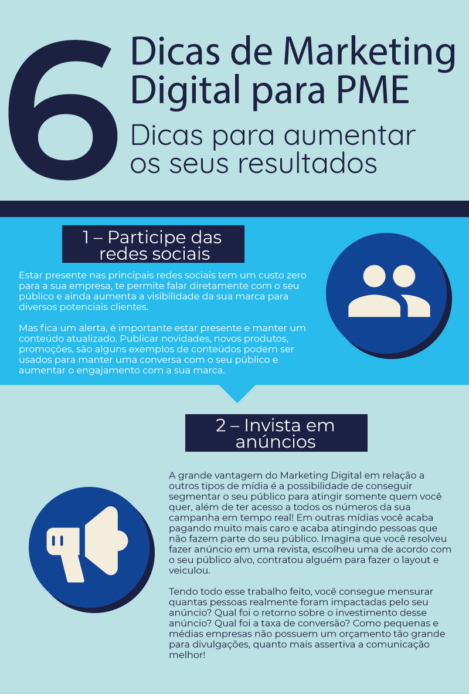

Dicas para aumentar os seus resultados
Muitas pessoas pensam que investimento em Marketing é apenas para empresas grandes, mas na verdade o Marketing Digital surge como uma alternativa para as pequenas e médias empresas que querem investir nesta estratégia e ter um bom retorno.
Mas para ter resultados reais usando essa ferramenta, é necessário fazer da maneira certa!
Imagine que você anda a pé e de repente ganha um carro, mas não sabe dirigir. Ou seja, você tem um veículo que pode te levar muito mais longe e muito mais rápido, mas não sabe como utilizar.
Assim também funciona com o marketing digital, é uma ferramenta muito poderosa, mas é preciso saber como utilizar para que ela te leve mais longe.
Por isso preparamos esse infográfico com 6 dicas para te ajudar a chegar mais longe com essa ferramenta.
A grande vantagem do Marketing Digital em relação a outros tipos de mídia é a possibilidade de conseguir segmentar o seu público para atingir somente quem você quer, além de ter acesso a todos os números da sua campanha em tempo real! Em outras mídias você acaba pagando muito mais caro e acaba atingindo pessoas que não fazem parte do seu público. Imagina que você resolveu fazer anúncio em uma revista, escolheu uma de acordo com o seu público alvo, contratou alguém para fazer o layout e veiculou. Tendo todo esse trabalho feito, você consegue mensurar quantas pessoas realmente foram impactadas pelo seu anúncio? Qual foi o retorno sobre o investimento desse anúncio? Qual foi a taxa de conversão? Como pequenas e médias empresas não possuem um orçamento tão grande para divulgações, quanto mais assertiva a comunicação melhor!
3 – Use testemunhais
Essa dica complementa muito com o que já falamos aqui sobre estar presente nas redes sociais. Como na internet é possível ter esse canal de comunicação com os seus clientes, aproveite esse espaço para coletar avaliações positivas sobre a sua marca e usar isso a seu favor! Você ganha muito mais credibilidade quando outra pessoa fala bem de você. Uma vantagem das PMEs é que esse volume de mensagens ainda não é tão alto, então é possível ter uma atenção maior com cada consumidor e essa atenção individual vai fazer toda a diferença na hora de uma possível recompra ou indicação da sua empresa para um amigo.
4 – Trabalhe os seus diferenciais
Hoje em qualquer segmento você encontra muita concorrência. E para não ser mais um no mercado é muito importante mostrar o que torna você especial, cada detalhe pode acabar fazendo a diferença no momento da decisão de compra do seu cliente. O que a sua empresa faz de diferente que a torna única em relação às outras? Esse diferencial competitivo pode ser a base da sua estratégia de Marketing, trabalhando em cima desses pontos cada vez mais as pessoas irão saber o porquê de optar por você, por isso é muito importante não copiar exatamente o que o seu concorrente está fazendo, trabalhe em cima do seu diferencial!
5 – Tenha um site e um blog
Essa dica pode ser um pouco mais difícil que as outras, mas pode te trazer ótimos resultados quando feita de maneira correta. Hoje em dia um site é uma ferramenta muito importante para que os seus potenciais consumidores encontrem você na internet, o seu site vai funcionar como uma vitrine virtual da sua marca. Por isso é interessante ter ao menos as suas informações básicas para que os seus clientes conheçam o seu produto, além de ter alguns outros itens como o propósito da sua marca para rolar aquela identificação e também os seus contatos. Já o blog vai ser uma ferramenta em que você pode criar conteúdo relevante para o seu cliente, lembram da dica de trabalhar o seu diferencial? Ela pode entrar aqui também, usem o blog para criar conteúdo mostrando o que torna a sua empresa especial e educar o seu consumidor em relação a qual problema o seu produto resolve.
6 – Utilize e-mail marketing
O e-mail marketing é outra ferramenta poderosa para aumentar os seus resultados através da internet. Você pode usar este recurso para enviar newsletters (lembra aquele conteúdo do blog? Ele pode entrar aqui), enviar promoções especiais para os seus clientes ou até mesmo só manter um relacionamento. Existem diversas ferramentas gratuitas que podem te ajudar nessa tarefa: MailChimp, Nitro News, BenchMark Email são só alguns exemplos de ferramentas que tem planos gratuitos e podem te ajudar nessa tarefa, além de serem bem intuitivas!
{kind=link}